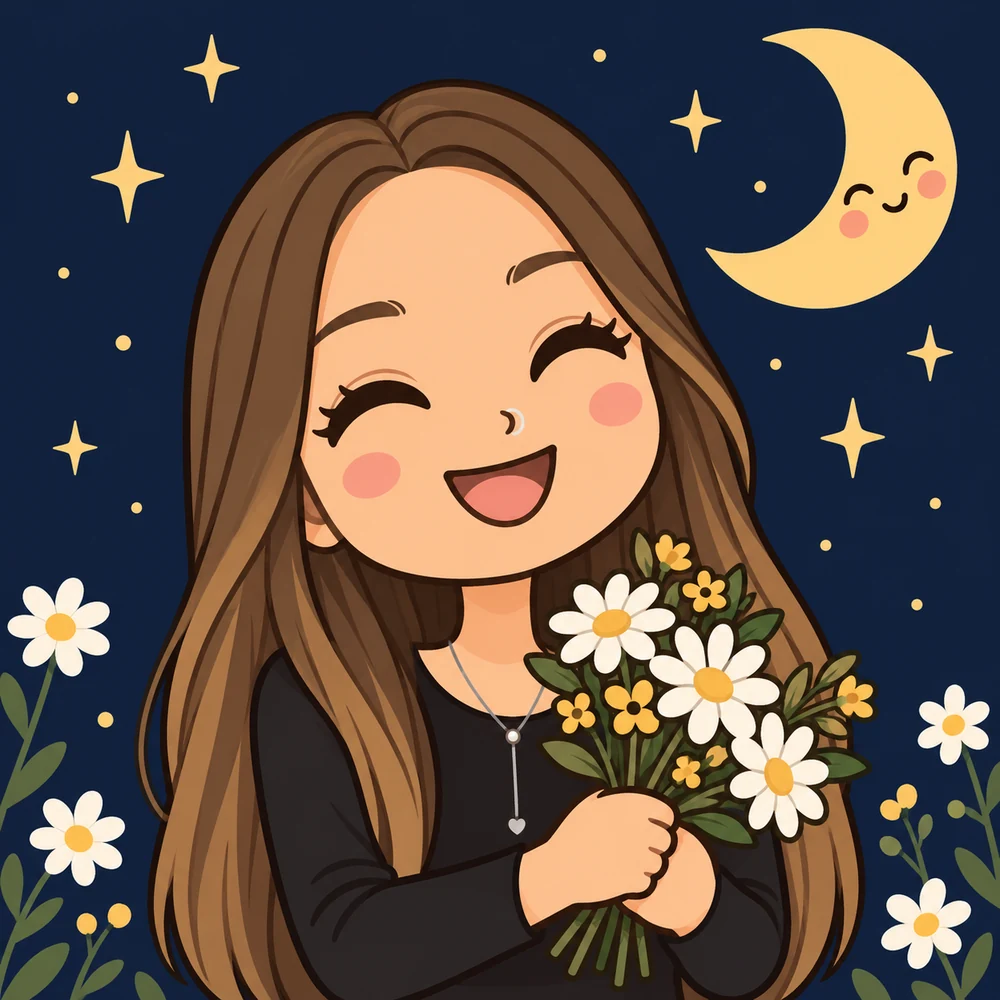
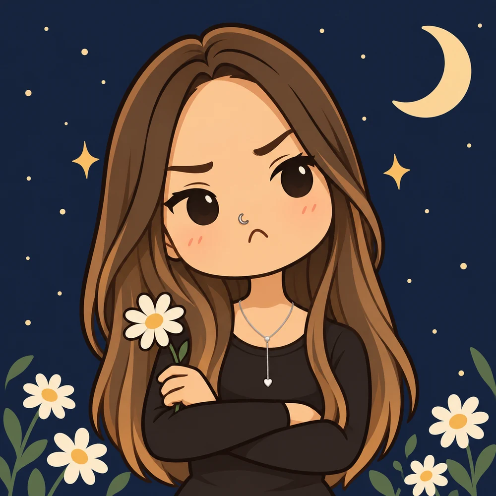
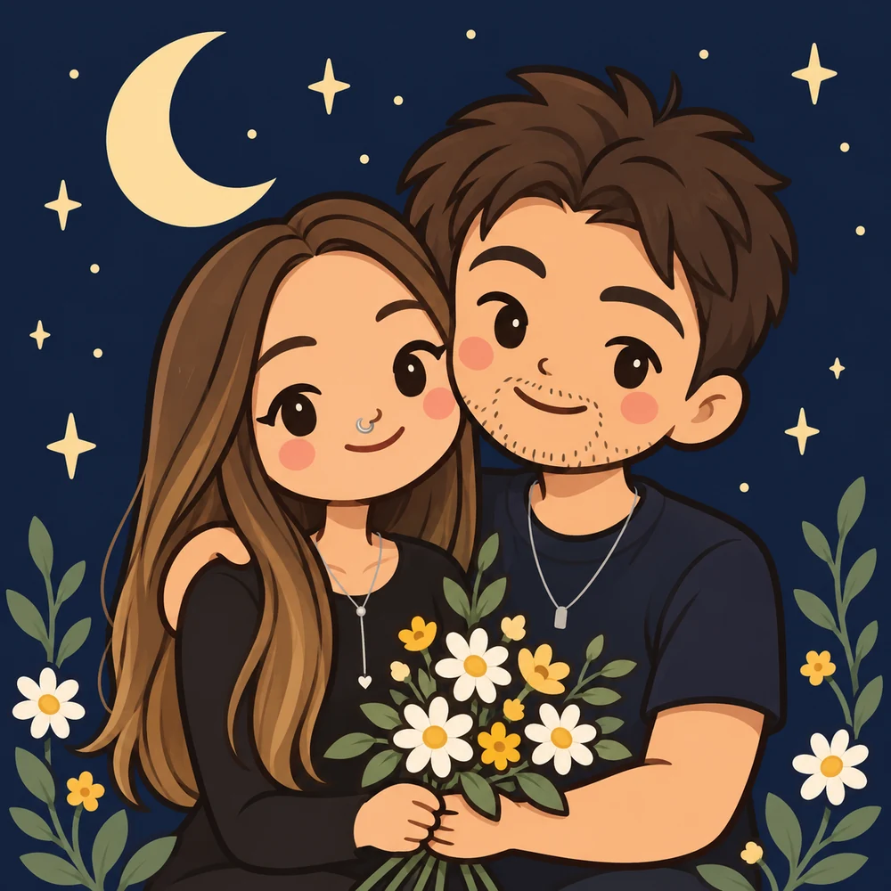

Ainda quero ouvir como foi seu dia.
A versão completa, com os detalhes, as pequenas coisas, FOFOCAS e o que te deu vontade de revirar os olhos.
UMA CARTINHA PARA A LULU
Lulu, eu te amo muito.
Fiz esse cantinho para te contar por quê, com muito carinho.

Flower Moon · Durand Jones & The Indications
01 / COISAS QUE EU QUERIA TE DIZER
Tenho alguns motivos.
O melhor deles ainda é a vontade de estar com você e te ter colada grudadinha: EU TE AMO.
A versão completa, com os detalhes, as pequenas coisas, FOFOCAS e o que te deu vontade de revirar os olhos.
Engenheiro, mestre e capaz de conversar sobre um monte de coisas que não envolvam computadores. Ainda assim, você consegue me deixar meio sem palavras. Acho bonito isso.
O “modestamente” foi uma tentativa de manter a elegância. Mas falando sério: eu queria te fazer rir, te abraçar e cuidar dos nossos dias comuns.
Um ótimo convite pro cafuné. Você bagunça, eu fico todo bobo, e pronto.
Se o passeio der esse azar, pode deixar comigo que eu cuido desse detalhe.
Já posso me te carregar no colo por todo canto. Você escolhe o destino; eu tento fazer cara de quem não está cansado.

o romance também pode ser isso:
um dia comum que fica melhor
porque a gente se encontrou. ♡
02 / ESSA PARTE IMPORTA MUITO
“E a nossa individualidade?
E os nossos planos?”
Eu entendo que isso te preocupe, Lulu. Para mim, tentar de novo incluiria cuidar do espaço de cada um. Quero fazer parte da sua vida e ver essa vida crescer.
Suas amizades, projetos e momentos a sós precisam caber na rotina. Podemos combinar tempo para estar juntos e tempo individual, com confiança para viver os dois.
Uma ideia nova, um trabalho de que você se orgulha, uma vontade de aprender. Quero ouvir sobre isso, apoiar quando você pedir e continuar cuidando dos meus próprios caminhos também.
Sobre o que precisaria mudar, os limites de cada um e como faríamos isso na prática. Podemos começar com um café, ouvir o que existe hoje e dar um passo de cada vez.
Eu quero estar perto
de quem você está se tornando.essa parte é sem exagero.
03 / TEM UNS PORÉNS TAMBÉM
Porque eu venho com umas coisinhas.
E achei justo te contar.
Num dia difícil ou quando a saudade aperta. Nessas horas, vou querer um abraço daqueles que demoram.
Meu juízo às vezes precisa ouvir um “Rafo, pelo amor de Deus” pra voltar a funcionar.
Começa com um milkshake, aparece um bolinho e, quando você vê, eu já trouxe o jantar e a sobremesa. Meu carinho tem dessas: gosta de te ver feliz e de prato cheio.
Se você chegar muito pertinho, eu não consigo resistir. É realmente igual o Alex mordendo o Martin em madagascar.
Você já chega toda linda. Aí vem esse nariz brilhando e eu preciso admirar de óculos escuros.
Tô precisando de skincare e de tirar uns pelinhos que você odeia. Aceito beijinhos e risadas durante a manutenção.
Nem toda brincadeira vai ter graça. Se você não gostar, eu aposento a piada e fico só no carinho.
Um “bom dia, Lulu” aqui, um abraço ali… quando vê, tem Rafo até no cheiro que fica na sua roupa.
P.S. / PRO MEU CHICLETINHO
Pra você abrir com calma.
Tem um pouquinho de nós aqui dentro.
guardei um universo de carinho
num envelope pra você. ♡
AGORA É SÓ EU FALANDO COM VOCÊ
Lulu, quero te pedir desculpa pelas vezes em que estive ausente. Você merecia presença, atenção e carinho, e houve momentos em que não te ofereci isso como deveria. Sinto muito.
Eu nunca deixei de te amar, Lulu. Eu te amo muito, do fundo do coração. Quero que esse amor apareça também nas coisas pequenas, no cuidado e no tempo que dedico a você.
A gente aprendeu a amar junto e cresceu junto, dividindo tanta coisa que hoje faz parte de quem somos. Você faz parte de mim, e eu não consigo deixar essa parte ir. Tem muito de você nas minhas lembranças, no meu jeito de ver a vida e nas coisas bonitas que ainda sonho viver.
Sinto saudade do seu beijo, de pedir comida com você, de te levar pra sair e de simplesmente estar ao seu lado. De não precisar ter nenhum programa especial, só você ali pertinho.
Tenho saudade de passar horas escolhendo um filme e acabar vendo um suspense. De passar dias escolhendo um presente, imaginando sua reação. Até das nossas discussões importantíssimas pra decidir as cores dos nossos cabelos.
Você é meu chicletinho, Lulu, e eu adoro ser seu grudinho. Gosto de te ter colada grudadinha, do abraço que demora e daquele “só mais cinco minutinhos” antes de desgrudar.
E sinto saudade até do que a gente ainda não viveu: dos passeios que faltam, dos lugares que poderíamos conhecer, de um dia qualquer que virasse mais uma lembrança bonita nossa.
Meu amor por você é infinito. Essa página é só um pedacinho dele, escrito com saudade e vontade de te dar um abraço, segurar em meus braços, te rodar e dar uma mordidinha no seus lábios.
um beijo demorado,
seu Rafo. ♡

04 / JOGO DO GRUDINHO
Se fizer menos de 10 pontos,
tem que voltar pra mim. ♡
O placar é brincadeira.
A escolha é sua, sempre.
corações, pizza e uma lua
levemente suspeita…
Pronta para uma partidinha, Lulu?
deslize o dedo ou use as setinhas ♡
05 / UM POUSINHO A DOIS
Uma navinha, dois grudadinhos
e um cantinho na Lua pra pousar.
vai devagarinho, piloto.
tem amor a bordo. ♡
Lulu + Rafo. Destino: um pousinho bem juntinhos.
segure impulso para subir e frear · setinhas para guiar
06 / TÁ BOM, MAS TEM UMA COISINHA…
Pode pedir, Lulu.
Eu já estou aqui todo bobo mesmo.
dessa vez eu fico bem quietinho.
bem na direção do seu beijo. ♡
tem um botão meio tímido por aqui…
Uma brincadeira só nossa. Nada é enviado ou salvo.